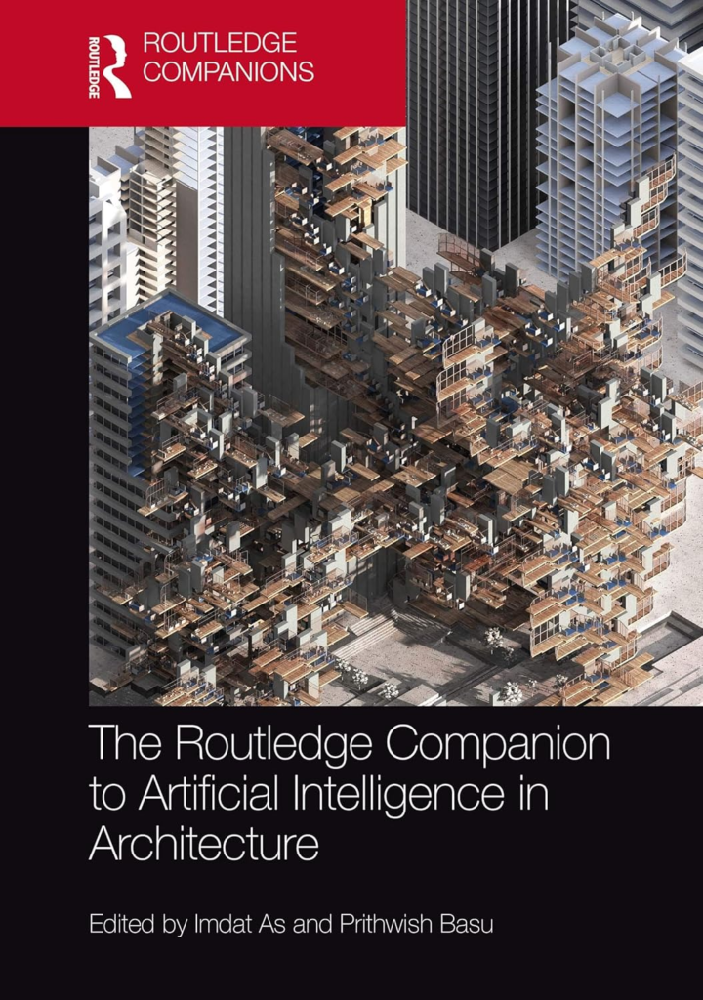
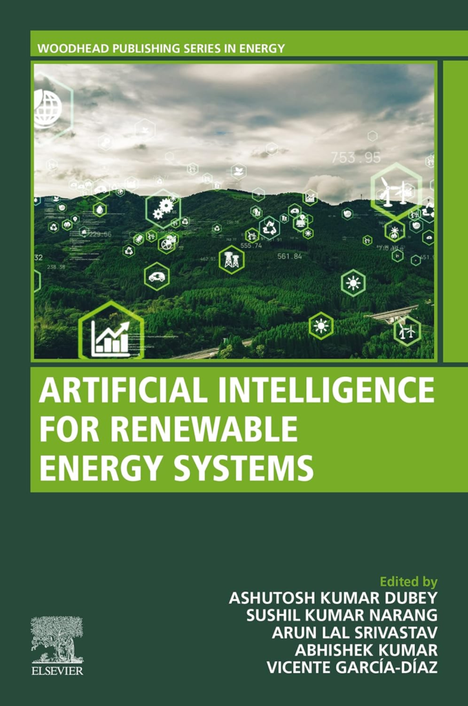
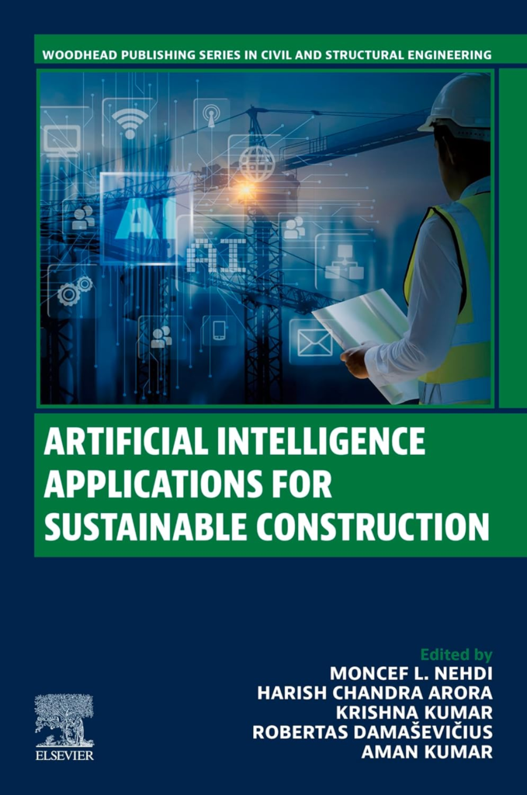

Inside a Data Center
A visual guide to understanding, designing, and speaking the language of data centers. Free 9-page preview, no strings attached.
Get the free previewThe architectural world is experiencing a revolution, and it’s largely powered by artificial intelligence (AI) and machine learning. Gone are the days when design was solely about creativity married to functionality. Now, architects and designers have powerful allies at their fingertips—algorithms that think, learn, and optimize design outcomes. This transformation is rippling through the architecture industry, changing how we envision, create, and inhabit spaces.
This blog post dives into the fascinating world of AI in architecture, exploring its impact on design innovation, sustainability, and the future of urban spaces. Whether you’re an architect, design innovator, or tech enthusiast, you’ll discover how machine learning is paving the way for more efficient, beautiful, and sustainable designs.

Understanding the Basics
What is AI and Machine Learning?
Artificial Intelligence refers to systems or machines that mimic human intelligence to perform tasks and can iteratively improve themselves based on the information they collect. Machine learning is a subset of AI that focuses on building systems that learn from data and improve their performance over time without being explicitly programmed.
Together, AI and machine learning bring forth a new era in architecture, where data-driven decisions enhance creativity and efficiency, allowing architects to explore form and function in unprecedented ways.
Architecture Meets AI
AI’s capabilities in data analysis, prediction, and optimization align perfectly with the goals of architectural design. These technologies help architects tackle complex design challenges, optimize resource use, and create buildings that are not only beautiful but also smart and sustainable.
As AI algorithms become more sophisticated, they enable the creation of dynamic, responsive designs that adapt to environmental changes and user needs, pushing architectural boundaries further than we could have imagined.
AI Applications in Architectural Design
Generative Design
Generative design uses machine learning algorithms to generate multiple design iterations based on specific criteria such as space, materials, and environmental factors. Architects can input their design constraints, and the AI produces thousands of potential solutions, optimizing for aesthetics, functionality, and cost.
This approach allows architects to explore innovative design solutions quickly and efficiently, enabling them to push creative boundaries and discover forms that human imagination alone might not conceive.
Parametric Design
Parametric design leverages AI to create adaptive, data-driven designs that evolve based on input parameters. By manipulating these parameters, architects can explore countless design variations and fine-tune their projects to meet specific goals.
This method opens the door to complex, intricate designs that are both visually stunning and highly functional, all while ensuring structural integrity and sustainability.
Visualization and Rendering
AI-driven visualization tools streamline the process of creating 3D renders and virtual walkthroughs, making it easier for architects to communicate their visions to clients and stakeholders. These tools offer real-time rendering capabilities and immersive experiences, helping clients visualize the final product before construction begins.
This enhanced visualization process reduces the likelihood of costly design changes and miscommunications, ensuring that the final build aligns closely with the original vision.
AI’s Impact on Building Sustainability and Energy Efficiency
Optimizing Energy Use
AI helps architects design buildings that use energy efficiently by predicting heating, cooling, and lighting needs. By analyzing weather patterns and historical energy data, AI can suggest design modifications that minimize energy consumption and reduce operational costs.
These insights allow architects to create buildings that not only meet regulatory standards but also contribute positively to environmental sustainability, aligning with the growing demand for eco-friendly architecture.
Material Selection and Resource Efficiency
AI plays a crucial role in selecting materials with low environmental impact, optimizing construction resources, and minimizing waste. Machine learning algorithms analyze the performance of various materials, considering factors such as durability, cost, and recyclability.
By selecting optimal materials, architects can reduce the carbon footprint of their projects, promoting resource efficiency and contributing to a more sustainable built environment.
Real-World Case Study
Consider the Bullitt Center in Seattle, often dubbed the “greenest commercial building in the world.” AI was integral in its design, optimizing for energy use and resource efficiency. The building generates its electricity through solar panels, captures and treats rainwater, and uses advanced systems to manage energy and water usage.
This project exemplifies how AI can help architects achieve ambitious sustainability goals, setting a new standard for eco-friendly design.
Enhancing Structural Integrity and Safety
Predictive Analysis
Machine learning can predict potential structural issues by analyzing historical data and simulations. By identifying weaknesses before they become critical, architects can enhance the safety and longevity of their designs.
This proactive approach ensures that buildings meet the highest safety standards, providing peace of mind for both developers and occupants.
Automated Structural Testing
AI tools conduct safety checks and identify structural vulnerabilities in building designs. These automated systems analyze vast amounts of data, detecting anomalies that human eyes might miss.
The result is a more thorough and efficient inspection process, reducing the risk of structural failures and ensuring that buildings are safe and secure.
Real-Time Monitoring
AI is used to monitor existing structures for signs of wear or damage, providing architects with insights for future designs. Sensors embedded in buildings collect data on stress, temperature, and humidity, which AI analyzes to detect early signs of deterioration.
This real-time monitoring allows for timely maintenance and repairs, extending the lifespan of the building and maintaining safety standards.
AI in Urban Planning and Smart Cities
Data-Driven Urban Design
AI uses demographic, geographic, and environmental data to inform urban planning decisions. By analyzing these datasets, planners can create cities that are more livable, efficient, and sustainable.
AI-driven urban design considers factors such as population density, land use, and transportation needs, ensuring that cities evolve in a way that meets the needs of their residents.
Traffic Flow and Public Spaces
AI helps plan for efficient traffic flow, green spaces, and other urban elements. By simulating various scenarios, AI can identify optimal solutions for reducing congestion, improving public transport, and enhancing urban life.
These insights enable planners to design cities that prioritize accessibility, sustainability, and quality of life, transforming urban landscapes into vibrant, interconnected communities.
Smart City Integration
AI in architecture aligns with smart city initiatives to create interconnected and adaptive city infrastructures. From energy-efficient buildings to smart grid systems, AI technologies are integral to developing cities that respond dynamically to the needs of their inhabitants.
This integration paves the way for a future where urban environments are not only intelligent but also resilient, adaptable, and sustainable.
Challenges and Ethical Considerations
Data Privacy
The implications of data collection in architectural AI are significant, particularly in projects involving personal or sensitive data. Ensuring data privacy is crucial to maintaining trust and compliance with regulations.
Architects and developers must implement robust data protection measures, ensuring that AI systems handle data ethically and transparently.
Human-Centric vs. Machine-Centric Design
Balancing machine-generated designs with the need for human-centric, culturally responsive architecture presents a challenge. While AI offers innovative solutions, architects must ensure that designs resonate with human values and cultural contexts.
This balance is essential for creating spaces that are not only functional but also meaningful and enriching for their users.
Job Displacement Concerns
AI has the potential to replace human roles within the field, raising concerns about job displacement. However, rather than replacing jobs, AI can augment human capabilities, enabling architects to focus on higher-level creative and strategic tasks.
By leveraging AI as a tool, architects can enhance their practice, driving innovation and expanding their capabilities.
Future Trends and Innovations
Digital Twins and Real-Time Data
Digital twins and their potential for real-time building and infrastructure management represent a significant trend in AI-driven architecture. These virtual replicas enable architects to monitor and optimize building performance continuously, enhancing operational efficiency and sustainability.
Digital twins offer unprecedented insights, transforming how architects manage and maintain built environments throughout their lifecycle.
Augmented Reality (AR) and Virtual Reality (VR) Integration
AI-powered AR and VR tools are expected to play a larger role in architectural design and client presentations. These technologies provide immersive experiences, allowing clients to explore designs interactively and make informed decisions.
AR and VR open new avenues for creativity and collaboration, reshaping the traditional design process and enhancing client engagement.
Predictive Analytics for Building Lifecycle Management
AI will assist in the ongoing maintenance and upgrading of buildings, maximizing their lifecycle and sustainability. Predictive analytics provide insights into maintenance needs, optimizing resource use and reducing operational costs.
This proactive approach ensures that buildings remain efficient and relevant, adapting to changing needs and technologies over time.
Recommended Books on AI in Architecture
The Routledge Companion to Artificial Intelligence in Architecture

Artificial Intelligence for Renewable Energy systems (Woodhead Publishing Series in Energy)

Artificial Intelligence Applications for Sustainable Construction (Woodhead Publishing Series in Energy

Conclusion
AI is undeniably reshaping architecture, influencing design, sustainability, safety, and urban planning. By harnessing the power of machine learning, architects can create spaces that are not only aesthetically pleasing but also efficient, adaptable, and sustainable.
Looking ahead, AI promises to continue evolving architectural practices, enabling architects to design eco-friendly buildings and craft responsive urban spaces. The possibilities are endless, and the future of architecture is brighter than ever.
For those eager to explore further, engaging with AI applications in architecture offers a pathway to stay informed and adapt to new developments. The future is here, and it’s time to embrace it.